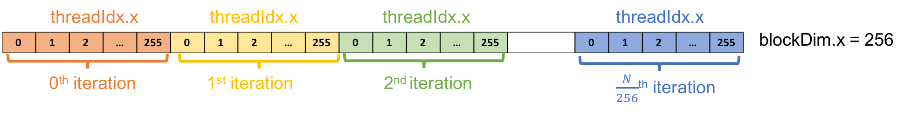
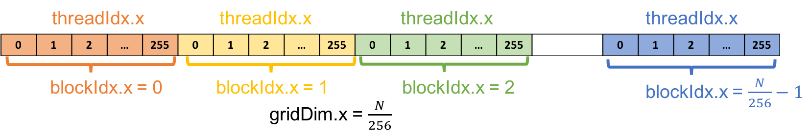

CUDA es un modelo escalable para programación paralela que habilita el uso de GPU para la programación de proposito general. Cuda es una plateaforma y un modelo de programación para GPUs. La plateaforma permite utilizar GPUs para computación de proposito general. Cuda provee extensiones para C/C++ y Fortran.
En CUDA, tanto CPUs como GPUs son utilizados. En programación heterogenea tipicamente nombramos host y device para referirnos a la CPU y GPU respectivamente. Tanto CPU como GPUs son plataformas separadas con su propio espacio de memoria.
Generalmente corremos serialmente en la CPU y descargamos el calculo paralelo a las GPUs.
En el siguiente bloque de código se puede diferenciar un programa en C de uno de CUDA.
C
void c_hello(){
printf("Hello World!\n");
}
int main() {
c_hello();
return 0;
}
CUDA
__global__ void cuda_hello(){
printf("Hello World from GPU!\n");
}
int main() {
cuda_hello<<<1,1>>>();
return 0;
}
La principal diferencia entre C y CUDa es el especificador __global__ y la sintaxis de <<<...>>> .
El __global__ indica una función que corre en el device (GPU). Estas funciones pueden ser llamadas desde el código del host, e.g. el main() para este ejemplo, y son tambien conocidas como “kernels”.
Cuando un kernel es llamado, la conficuración de ejecucion es proveida mediante <<<...>>>, e.g. cuda_hello<<<1,1>>>(). Ln la terminología de CUDA esto es llamado “kernel launch”. Luego veremos que significa el parámetros (1,1).
El compilador de CUDa es similar al de C. NVIDIA prevee a CUDa un compilador llamado nvcc, tipicamente guardado en un archivo con extensión .cu. FPor ejemplo:
$> nvcc hello.cu -o hello
Podría ser que encuentres el siguiente warning a compilar el programa:
nvcc warning : The 'compute_20', 'sm_20', and 'sm_21' architectures are deprecated, and may be removed in a future release (Use -Wno-deprecated-gpu-targets to suppress warning).
Este warning pued ser ignorado por el momento.
El hello world en CUDa no hace nada, incluso si es compilado nada se mostraría en la pantalla. Para poner en práctica vamos a realizar adicón de vectores:
El siguiente es un ejemplo de adición implementado en C (./vector_add.c). El ejemplo computa la suma de dos vectores guardados en el array a y b y los guarda en el array out.
#define N 10000000
void vector_add(float *out, float *a, float *b, int n) {
for(int i = 0; i < n; i++){
out[i] = a[i] + b[i];
}
}
int main(){
float *a, *b, *out;
// Allocate memory
a = (float*)malloc(sizeof(float) * N);
b = (float*)malloc(sizeof(float) * N);
out = (float*)malloc(sizeof(float) * N);
// Initialize array
for(int i = 0; i < N; i++){
a[i] = 1.0f; b[i] = 2.0f;
}
// Main function
vector_add(out, a, b, N);
}
In the first exercise, we will convert vector_add.c to CUDA program vector_add.cu by using the hello world as example.
vector_add.c to vector_add.cu$> cp vector_add.c vector_add.cu
vector_add() a GPU kernel__global__ void vector_add(float *out, float *a, float *b, int n) {
for(int i = 0; i < n; i++){
out[i] = a[i] + b[i];
}
}
vector_add() llamado en main() a la llamada del kernelvector_add<<<1,1>>>(out, a, b, N);
$> nvcc vector_add.c -o vector_add
$> ./vector_add
Notarás que el programa no funciona correctamente. La rason es que CPU y GPUs son entidades separadas, ambas tienen su propia memoria. La CPU no puede acceder a la memoria de la GPU y vice versa. EN la terminologia de CUDA, la memoria de la CPU es llamada host memory y la de la GPU device memory. Los Poinnters a CPU y GPU son llamados host pointer y device pointer respectivamente.
Para que los datos sean accesibles por la GPU es necesario que sean presentados en la device memory.
A continuación se presenta el workflow común de programas CUDA:
Hasta ahora solo hecmo hecho los pasos 1 y 4.
Vamos a agregar los pasos 2, 3, y 5 a nuestro programa para completar el ejercicio:
Para el manejo de memoria del device CUDA provee varias funciones para alocatar device memory. Las más comunes son cudaMalloc() y cudaFree().
La sintaxis para estas funciones es:
cudaMalloc(void **devPtr, size_t count);
cudaFree(void *devPtr);
cudaMalloc() allocatea memoria de tamaño count en la memoria del device y actualiza el device pointer devPtr a la memoria alocatada. cudaFree() desalocatea la region dememoria del device hacia donde el puntero del device devPtr apunta. Estas funciones son comparables con malloc() y free() de C, respectivamente.
Transferir datos entre hosy y device memory puede ser hecho atravez de la función cudaMemcpy, el cual es similar a memcpy de C. La sintaxis de cudaMemcpy es:
cudaMemcpy(void *dst, void *src, size_t count, cudaMemcpyKind kind)
La funcipn copia una memoria de tamaño count de src a dst. kind indica la dirección. En egeneral el valor de kind es cudaMemcpyHostToDevice ó cudaMemcpyDeviceToHost. Hay otros posibles valores pero no lo vamos a desarrollar en este tutorial.
Ahora debemos:
Alocatar y desalocatar device memory para a, b, y out.
Transferir a, b, y out entre host y device memory.
Un ejemplo para el array ‘a’ seria:
void main(){
float *a, *b, *out;
float *d_a;
a = (float*)malloc(sizeof(float) * N);
// Allocate device memory for a
cudaMalloc((void**)&d_a, sizeof(float) * N);
// Transfer data from host to device memory
cudaMemcpy(d_a, a, sizeof(float) * N, cudaMemcpyHostToDevice);
…
vector_add<<<1,1>>>(out, d_a, b, N);
…
// Cleanup after kernel execution
cudaFree(d_a);
free(a);
}
./solutions/vector_add.cu) )$> nvcc vector_add.cu -o vector_add
$> time ./vector_add
Para medir la performance, usar time no da mucha inromación. NVIDIA provee un comando llamado nvprof, el cua da más información.
Para evaluar nuestra suma de vectores se puede usar el siguiente comando:
$> nvprof ./vector_add
El resultado en Tesla M2050 dio:
==6326== Profiling application: ./vector_add
==6326== Profiling result:
Time(%) Time Calls Avg Min Max Name
97.55% 1.42529s 1 1.42529s 1.42529s 1.42529s vector_add(float*, float*, float*, int)
1.39% 20.318ms 2 10.159ms 10.126ms 10.192ms [CUDA memcpy HtoD]
1.06% 15.549ms 1 15.549ms 15.549ms 15.549ms [CUDA memcpy DtoH]
Hasta ahora el programa no corre en paralelo ya que la la configuración de ejecución del kernel es <<<1,1>>>, esto indica que el kernel es enviado con solo 1 thread.
CUDA usa la configuracion de ejecución del kernel <<<...>>> para avisar cuantos threads mandar a la GPU. CUDA organiza los threads en un grupo llamado “thread block”. El kernel puede mandar multiples thread blocks, oorganizados en una estructura de grilla ó “grid”.
La sintaxis sería:
<<< M , T >>>
Lo que indicaría que el kernel manda una grilla de M thread blocks, cada trhread con T threads paralelos.
Si quisieramos paralelizar el codigo de suma de vectores usando 1 grupo de 256 threads la configuración sería:
vector_add <<< 1 , 256 >>> (d_out, d_a, d_b, N);
CUDA prevee variables prefabricadas para acceder a la información del thread. En nuestro caso usariemos:: threadIdx.x and blockIdx.x.
threadIdx.x contiene el indice del thread dentro del bloqueblockDim.x contiene el tamaño del bloque (el numero de threads en el thread block).Para la configuración de vector_add() el valor de threadIdx.x va de 0 a 255 y el de blockDim.x es 256.
Recalls the kernel of single thread version in vector_add.cu. Notes that we modified the vector_add() kernel a bit to make the explanation easier.
__global__ void vector_add(float *out, float *a, float *b, int n) {
int index = 0;
int stride = 1
for(int i = index; i < n; i += stride){
out[i] = a[i] + b[i];
}
}
En esta implementación solo un thread computa la adición iterando atravez del array entero. Con 256 threads la adición puede esparcirse atravez de los threads y computarse simultaneamente.
Para el thread k-ésimo, el loop empieza en el el k-éstimo elemento e itera mediante el array con un stride de 256. Por ejemplo, en el 0-éstima iteración el k-estimo thread computa la adición del k-esimo elemento. En la siguiente iteración la k-ésima computa la adición de (k+256)-iestimo elemento y así.
La siguiente imagen muestra una ilustración de la idea:

Ejercicio: Intenta implementar esto en vector_add_thread.cu
vector_add.cu ao vector_add_thread.cu$> cp vector_add.cu vector_add_thread.cu
Paralelizar vector_add() usando un thread block con 256 threads.
Compiler y evaluar perfomance del programa:
$> nvcc vector_add_thread.cu -o vector_add_thread
$> nvprof ./vector_add_thread
Ver solución en solutions/vector_add_thread.cu
Performance:
==6430== Profiling application: ./vector_add_thread
==6430== Profiling result:
Time(%) Time Calls Avg Min Max Name
39.18% 22.780ms 1 22.780ms 22.780ms 22.780ms vector_add(float*, float*, float*, int)
34.93% 20.310ms 2 10.155ms 10.137ms 10.173ms [CUDA memcpy HtoD]
25.89% 15.055ms 1 15.055ms 15.055ms 15.055ms [CUDA memcpy DtoH]
Agregar mas thread blocks
Las GPUs tienen muchos procesadores paralelos llamados Streaming Multiprocessors ó SMs. Cada SM consiste en multiples procesadores que puede correr thread blocks concurrentes en simultaneo.
De forma siilar a la información del thread, CUDA provee variables prefabricadas para acceder a la información del bloque.
blockIdx.x contiene el indice del bloque en la grillagridDim.x contiene el tamaño de la grillaEn lugar de usar un thread block para iterar sobre el array, vamos a usar multiple thread blocks para crear N threads, cada uno procesa un aelemento del array. 
Con 256 threads por thread block, necesitaríamos por lo menos N/256 thread block para tener un total de N threads. Para aignar un thread a un elemento especifico necesitamos saber el indice único de cada thread. Esto se computa así:
int tid = blockIdx.x * blockDim.x + threadIdx.x;
EXERCISE: Try to implement this in vector_add_grid.cu
vector_add.cu a vector_add_grid.cu$> cp vector_add.cu vector_add_thread.cu
2. Parallelizar `vector_add()` usando multiple thread blocks.
3. Manejar el caso cuando `N` es un numero arbitrario.
* HINT: Add a condition to check that the thread work within the acceptable array index range.
4. Compilar y evaluar performance
```bash
$> nvcc vector_add_grid.cu -o vector_add_grid
$> nvprof ./vector_add_grid
Ver solución en solutions/vector_add_grid.cu
El resultado de la performance fue en Tesla M2050
==6564== Profiling application: ./vector_add_grid
==6564== Profiling result:
Time(%) Time Calls Avg Min Max Name
55.65% 20.312ms 2 10.156ms 10.150ms 10.162ms [CUDA memcpy HtoD]
41.24% 15.050ms 1 15.050ms 15.050ms 15.050ms [CUDA memcpy DtoH]
3.11% 1.1347ms 1 1.1347ms 1.1347ms 1.1347ms vector_add(float*, float*, float*, int)
| Version | Execution Time (ms) | Speedup |
|---|---|---|
| 1 thread | 1425.29 | 1.00x |
| 1 block | 22.78 | 62.56x |
| Multiple blocks | 1.13 | 1261.32x |